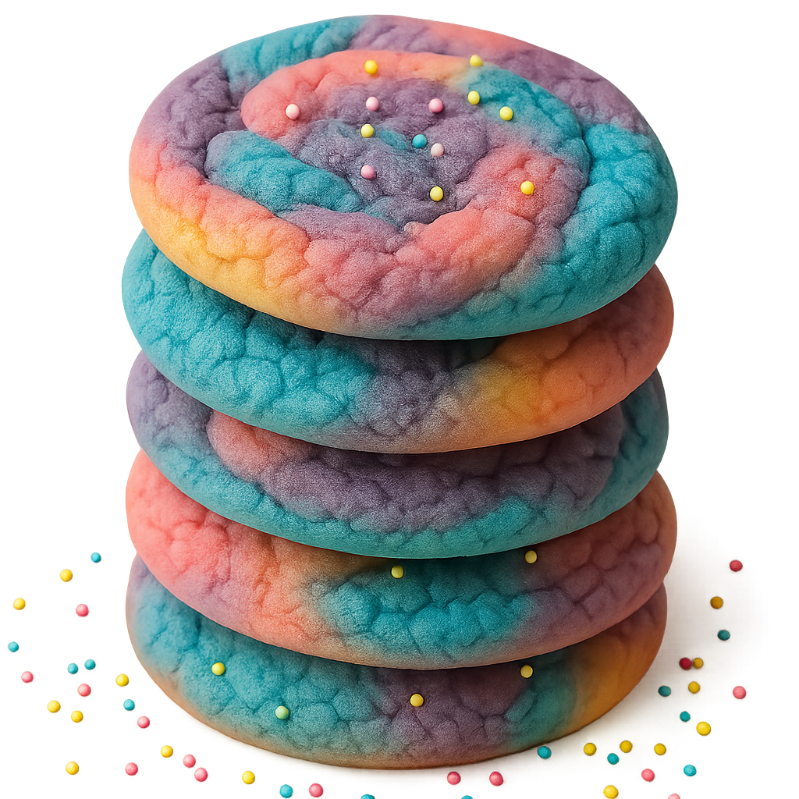

유니콘 쿠키

재료
- 밀가루 2컵
- 계란 1개
- 베이킹파우더 1티스푼
- 베이킹소다 1/2티스푼
- 소금 1/4티스푼
- 식물성 쇼트닝 1컵
- 설탕 1 1/4컵
- 바닐라 추출물 1티스푼
- 식용 색소
만드는 방법
- 오븐을 180°C로 예열한다.
- 중간 크기 볼에 밀가루 2컵, 베이킹파우더 1티스푼, 베이킹소다 1/2티스푼, 소금 1/4티스푼을 넣고 섞는다.
- 다른 큰 볼에 식물성 쇼트닝 1컵과 설탕 1컵을 넣고 부드럽게 크림화되도록 섞는다.
- 계란 1개와 바닐라 추출물 1티스푼을 넣고 골고루 섞는다.
- 마른 재료를 크림화된 재료에 나눠 넣으며 잘 섞어 쿠키 반죽을 만든다.
- 반죽을 3등분해서 각각 핑크, 블루, 퍼플 식용 색소를 소량씩 넣고 색을 입힌다.
- 각 색의 반죽을 손으로 떼어내고 살짝씩 섞어 2.5cm 크기의 알록달록한 반죽 공을 만든다.
- 남은 설탕 1/4컵에 반죽 공을 굴려 겉면을 코팅한다.
- 유산지를 깐 오븐 팬에 쿠키 반죽을 5cm 간격으로 올리고, 스프링클을 위에 뿌린다.
- 180°C로 예열한 오븐에서 9~11분간 굽는다. 가장자리가 살짝 갈색을 띠면 꺼낸다.
- 팬 위에서 잠시 식힌 후 식힘망에 옮겨 완전히 식힌다.
- 겉은 바삭하고 안은 쫀득한 유니콘 쿠키 완성! 우유와 함께 즐기면 더욱 맛있다 🦄
✴︎ 난이도: 🦄 🦄 🦄
✴︎ 조리 시간: 약 30분
✴︎ 굽는 온도: 180°C
✴︎ 메모
색소를 섞을 때 많이 휘젓지 말고 살살 섞어야 컬러 마블링이 예쁘게 나온다!